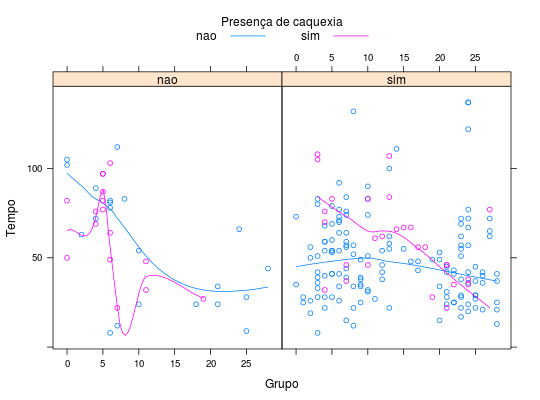

Desenvolvimento de Massa Tumoral em Ratos
Estudo realizado para avaliar a influência da série (passagem do tumor) na morte (caquexia) de certa espécie de rato. Um total de 204 animais teve tumor inoculado num determinado momento da série. Para cada animal, além do grupo de passagem, foram observadas as variáveis presença de massa tumoral, caquexia e o tempo de observação.
Format
Um data.frame com 204 observações e 4 variáveis.
grupo- Grupo de passagem (0 a 28).
massat- Presença de massa tumoral (sim ou não).
caq- Caquexia (sim ou não).
tempo- Tempo de sobrevivência (em dias).
Source
PAULA (2004), Eg 1.12.4, pág. 90.
Examples
data(PaulaEg1.12.4)#> Warning: data set ‘PaulaEg1.12.4’ not foundstr(PaulaEg1.12.4)#> 'data.frame': 204 obs. of 4 variables: #> $ grupo : int 0 0 2 3 3 4 4 4 5 5 ... #> $ massat: Factor w/ 2 levels "nao","sim": 1 2 2 2 2 2 2 1 1 1 ... #> $ caq : Factor w/ 2 levels "nao","sim": 1 1 1 1 1 1 1 2 2 2 ... #> $ tempo : int 102 73 26 39 80 68 59 69 97 97 ...library(lattice) xyplot(tempo ~ grupo | massat, groups = caq, data = PaulaEg1.12.4, type = c("p", "smooth"), xlab = "Grupo", ylab = "Tempo", auto.key = list(space = "top", columns = 2, title = "Presença de caquexia", cex.title = 1, lines = TRUE, points = FALSE))#> Warning: pseudoinverse used at 5#> Warning: neighborhood radius 1#> Warning: reciprocal condition number 0#> Warning: pseudoinverse used at 5#> Warning: neighborhood radius 1#> Warning: reciprocal condition number 0#> Warning: pseudoinverse used at 5#> Warning: neighborhood radius 1#> Warning: reciprocal condition number 0#> Warning: pseudoinverse used at 5#> Warning: neighborhood radius 1#> Warning: reciprocal condition number 0#> Warning: pseudoinverse used at 5#> Warning: neighborhood radius 1#> Warning: reciprocal condition number 0bwplot(tempo ~ massat | caq, pch = "|", data = PaulaEg1.12.4, ylab = "Tempo", xlab = "Presença de massa tumoral")